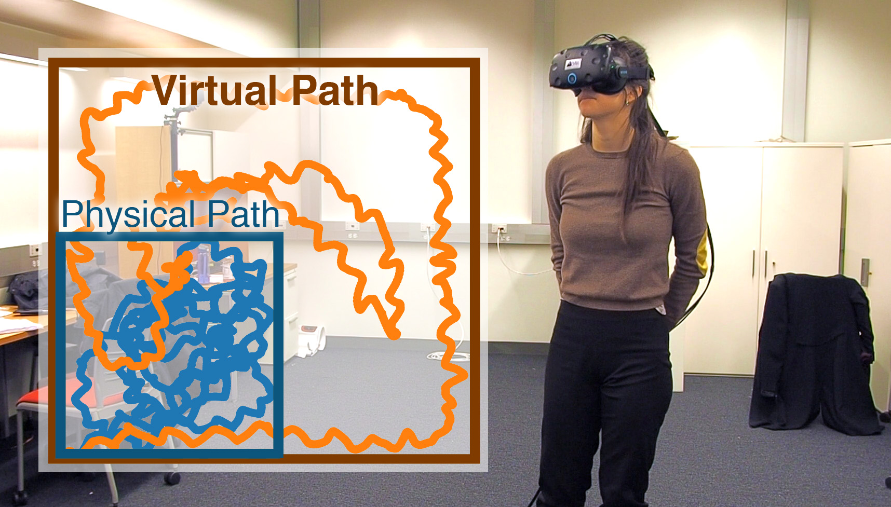
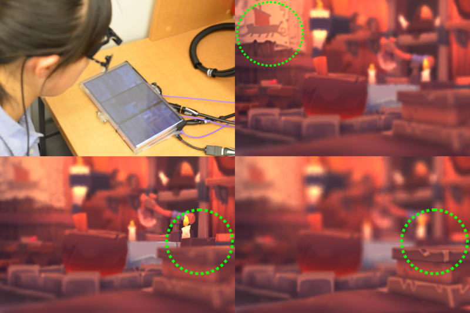
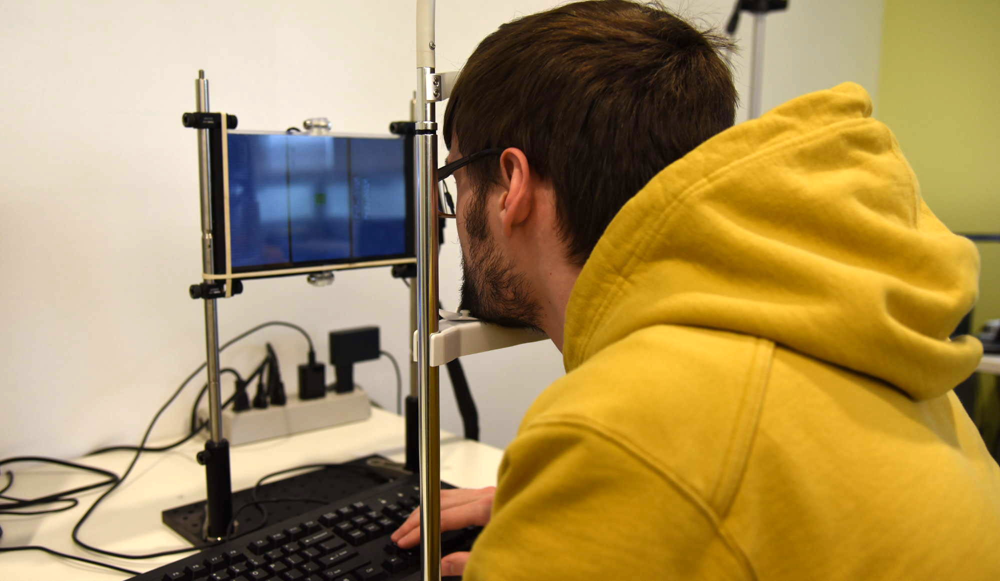

|
|
|
|
I am a research scientist at Adobe Research. Previously, I received my PhD at Stony Brook University. My dissertation is Computational Methods for Immersive Perception. I was advised by Distinguished Professor Arie E. Kaufman. Before this, I obtained my Bachelor's Degree in Mathematics from Shandong University, China.
My research interests lie in computer graphics, virtual/augmented reality and scientific visualization, particularly bridging fundamental algorithms and human perception factors. You can find my CV here.
Internship opportunities for PhD students: shoot me an email if you are interested in conducting top research for future VR/AR and (real-time) perceptual computer graphics at Adobe Research.
Adobe Research, San Jose, CA
Research Scientist, June 2018 -
Adobe Research, Procedural Imaging Group, San Jose, CA
Research Intern, July 2017 - September 2017
With Paul Asente, Cynthia Lu, and
Li-Yi Wei
NVIDIA Research, New Experiences Group, Redmond, WA
Research Intern, April 2017 - July 2017
With Anjul Patney, Morgan McGuire, Omer Shapira, Aaron Lefohn and David Luebke
NVIDIA Research, New Experiences Group, Santa Clara, CA
Research Intern, June 2016 - August 2016
With Fu-Chung Huang, Joohwan Kim and David Luebke
Microsoft Research Asia, Hardware Computing Group, Beijing
Research Intern, November 2012 - February 2013
|  |
|
|  |
|
|  |
|
 |
|